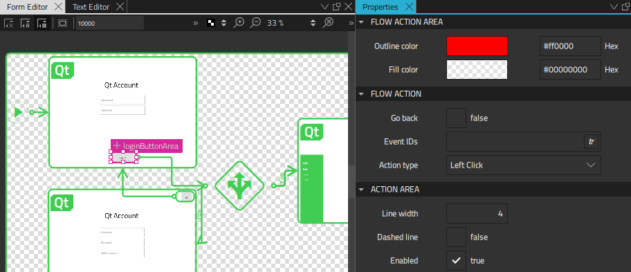
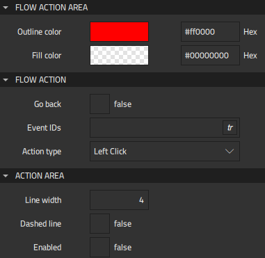
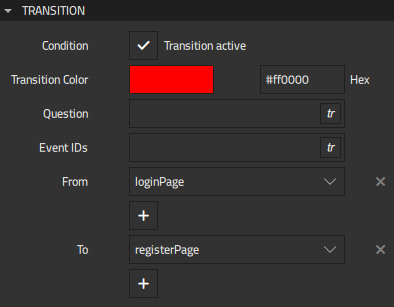
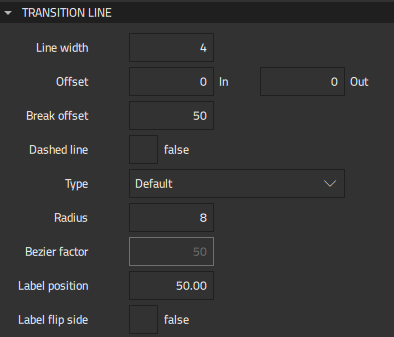
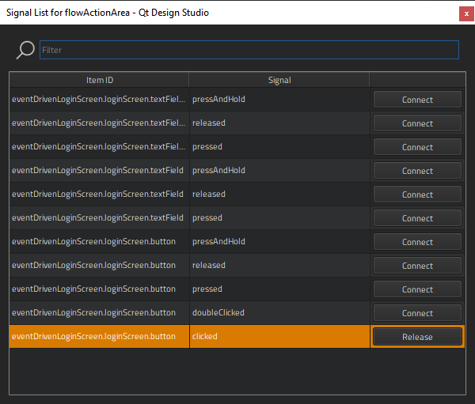

Adding Action Areas and Transitions
Action areas can act as clickable areas that initiate transitions between flow items or they can create connections to any signal from any component in a flow item. For example, you could connect an action to the onPressed signal of a button in your flow item to determine what should happen when users press the button.

Note: To connect components to signals, you must first export the components as aliases in Navigator. To create and release connections, select Open Signal Dialog in the context menu.
You can select the type of the mouse or touch input to use for triggering events, such as click, double-click, flick, pinch, or press.
Typically, a flow item can be connected to several other flow items in the flow with two-way connections. To avoid clutter, you can set an action area as go back instead of adding explicit transition lines to and from every potentially connected flow item. When the Go back option is enabled, the transition will always take the user back to the previous flow item.
You can specify the appearance of each action area or transition line, including the color, line thickness, dotted or solid lines, and even the curve of the transition lines. You can change some of these properties globally, as instructed in Flow View Properties.
To create action areas:
- Right-click the flow item in the 2D view and select Flow > Create Flow Action in the context menu.
- Drag the action area to the UI control that you want to connect to the other flow item. For example, to a button that opens another flow item when clicked.
- Double-click the action area and drag the transition line to the flow item you want to connect to.
- In Properties, modify the properties of the action area and transition line.
To preview the flow, select the Live Preview button on the top toolbar or press Alt + P.
Common Properties
You can specify basic properties for Flow Action Area and Flow Transition components in the Component, Geometry - 2D, and Visibility sections in the Properties view.
In the Layout tab, you can use anchors to position the component.
In the Advanced section, you can manage the more advanced properties of components.
Flow Action Area Properties
In the Flow Action Area section, you can use the color picker to set line and fill color.

In the Flow Action and Action Area sections, specify additional properties for action areas:
- Select the Go back check box to specify that the transition will always take the user back to the previous flow item.
- In the Event IDs field, specify the IDs of the events to connect to, such as mouse, touch or keyboard events.
- In the Action type field, select the type of the mouse or touch input to use for triggering events.
- In the Line width field, set the width of the action area outline.
- Select the Dashed line check box to draw a dashed action area outline.
- Select the Enabled check box to enable interaction with the action area during preview.
Flow Transition Properties
In the Transition section, specify additional properties for transitions between flow items:

- Select the Condition checkbox to activate the transition. You can select
 to bind a condition to the transition.
to bind a condition to the transition. - In the Question field, enter the text that will appear next to the transition line. If the transition represents the connection to a Flow Decision component, the text will also be visible in the selection dialog that opens when the condition is triggered.
- In the Event IDs field, specify the IDs of the events to connect to, such as mouse, touch or keyboard events.
- In the From and To fields, select the flow item where the transition starts and the one where it ends.
You can specify the following properties to change the appearance of transition lines in the 2D view:

- In the Line width field, set the width of the transition line.
- In the Offset and Break offset fields, set the start point (Out) or end point (In) of a transition line or a break to the specified offset. This enables you to move them up and down or left and right.
- Select the Dashed line check box to draw a dashed line.
- In the Type field, select Bezier to draw transition lines as bezier curves.
- In the Radius field, specify the corner radius for default curves.
- In the Bezier factor field, specify the factor that modifies the positions of the control points used for a bezier curve.
- In the Label position field, set the position of the value of the Question field in respect to the transition start point.
- Select the Label flip side check box to move the Question value to the opposite side of the transition line.
Connecting and Releasing Signals
To connect a component to a signal, select Open Signal Dialog in the context menu. The Signal List dialog displays the signals for all components that you export as aliases in Navigator.

To connect a component to a signal, select Connect next to one in the list. To release a connected signal, select Release.